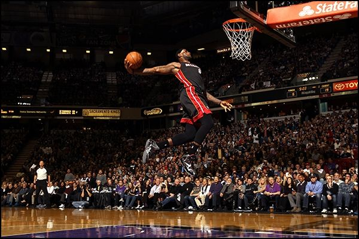
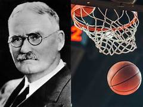
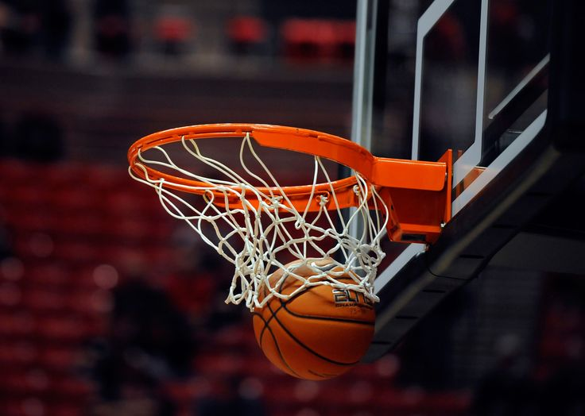
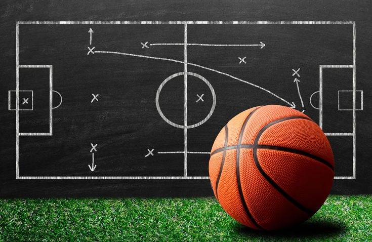
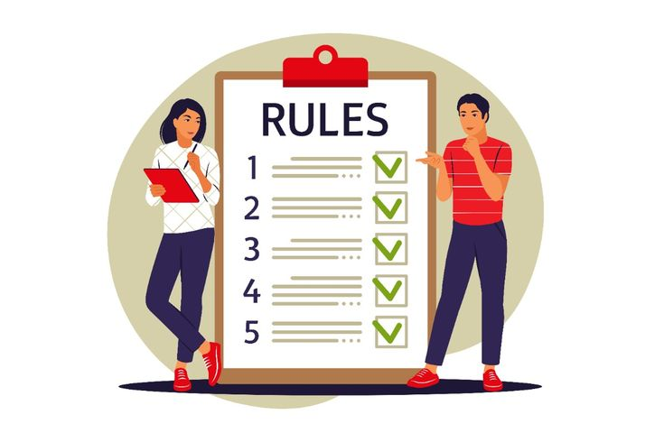
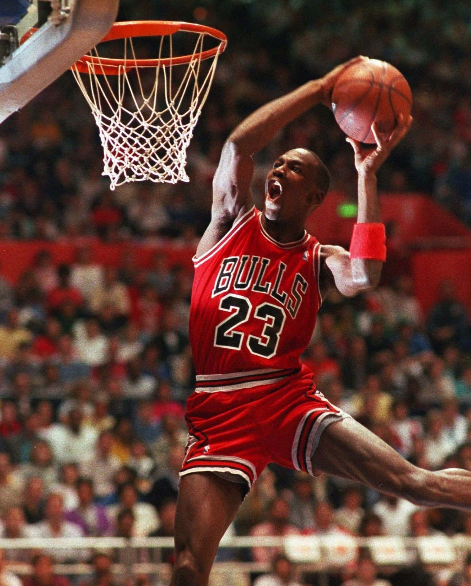
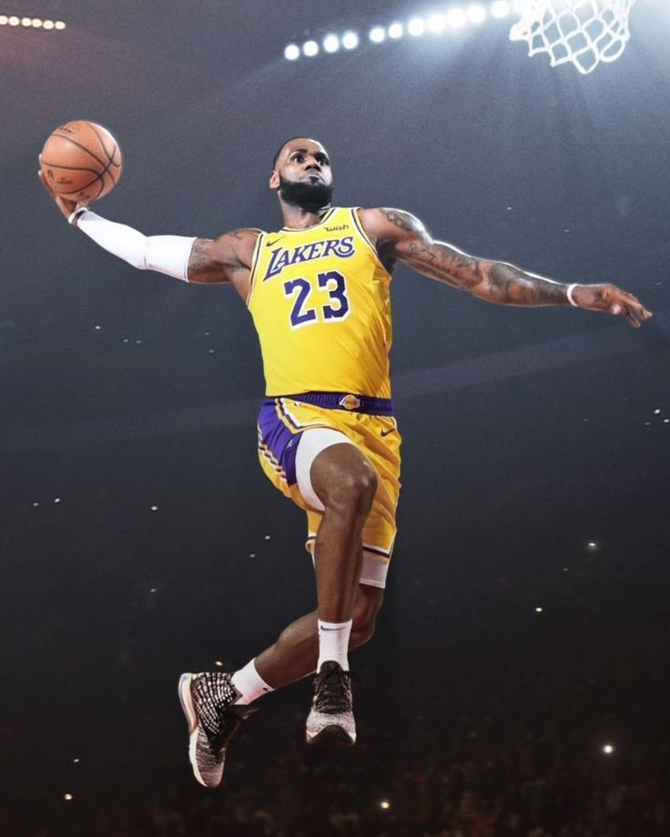
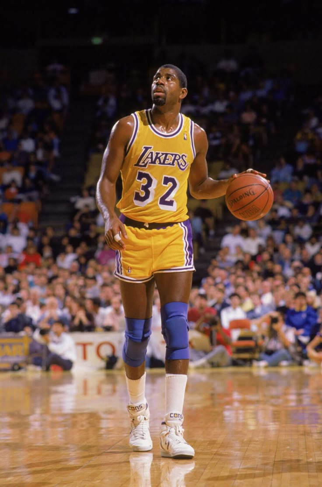

LE BASKETBALL

Le basketball est un sport dynamique qui attire des passionnés de tous horizons. En tant que loisir, c'est plus qu'un simple jeu ; c'est un outil de cohésion sociale et une façon ludique de rester actif.
HISTOIRE DU BASKETBALL

Le basketball a été inventé en 1891 par James Naismith, un éducateur physique canadien. Naismith cherchait un sport pouvant être pratiqué en intérieur pendant les hivers rigoureux et a conçu un jeu aux règles simples mais polyvalentes. Aujourd'hui, le basketball est devenu un phénomène mondial, profondément ancré dans diverses cultures et continents, et l'un des sports les plus populaires.
OBJECTIFS ET SCORE

Au basketball, votre objectif principal est de marquer des points en tirant le ballon à travers le panier adverse. Un panier rapporte deux points s'il est tiré depuis l'intérieur de l'arceau à trois points, et trois points s'il est tiré au-delà. Chaque lancer franc après une faute vaut un point. Comprendre le fonctionnement du score est essentiel pour toutes vos stratégies et actions sur le terrain.
RÈGLES ET RÈGLEMENTS DU BASKETBALL

Les règles du jeu sont essentielles pour garantir le fair-play et le plaisir de tous les joueurs. Une partie typique se joue entre deux équipes de cinq joueurs chacune, qui s'affrontent pour marquer le plus de points.
Les règles de base sont les suivantes:
- Dribble: Vous devez dribbler le ballon tout en vous déplaçant sur le terrain.
- Tir: Si vous arrêtez de dribbler, vous devez passer ou tirer.
- Fautes: Les règles de contact sont appliquées pour protéger les joueurs; leur non-respect entraîne des lancers francs ou des pertes de balle.
- Hors limites: Le ballon est remis à l'équipe adverse s'il sort des lignes de touche ou de fond.
La simplicité et la profondeur du basketball en font un sport captivant, tant à regarder qu'à pratiquer. Avec des règles et des objectifs clairs, c'est un jeu qui favorise le travail d'équipe, les compétences et la forme physique.
LES 10 RÈGLES DE BASE DU BASKETBALL POUR DÉBUTANT

- Le jeu se joue avec deux équipes de cinq joueurs.
- Le but est de marquer en tirant le ballon dans le panier adverse.
- Il faut dribbler le ballon en se déplaçant.
- Une partie se déroule en quatre quarts-temps.
- L'équipe qui marque le plus de points gagne.
- Après avoir marqué, le ballon passe à l'équipe adverse.
- Les fautes personnelles et techniques peuvent donner lieu à des lancers francs.
- Le ballon hors des limites du terrain est donné à l'équipe adverse.
- Les joueurs ont un nombre limité de fautes personnelles par match.
- La règle des trois secondes dans la zone clé (couloir) est appliquée.
LES PLUS GRANDS JOUEURS DU BASKETBALL DE TOUS LES TEMPS
 |
 |
 |
Michael Jordan |
LeBron James |
Magic Johnson |
Il a joué 15 saisons en NBA entre 1984 et 2003, remportant six titres NBA avec les Chicago Bulls. |
Lors de son deuxième passage chez les Cleveland Cavaliers, LeBron James a mené l'équipe en finale NBA quatre fois de suite et a remporté un titre. |
Quatre fois meilleur passeur, il détient le record de passes par match en saison et en playoffs. |